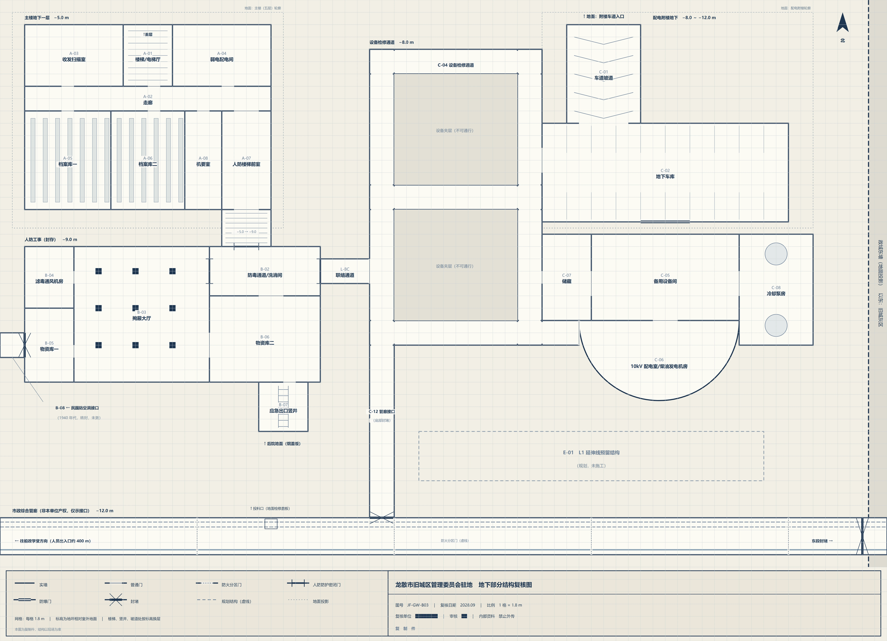
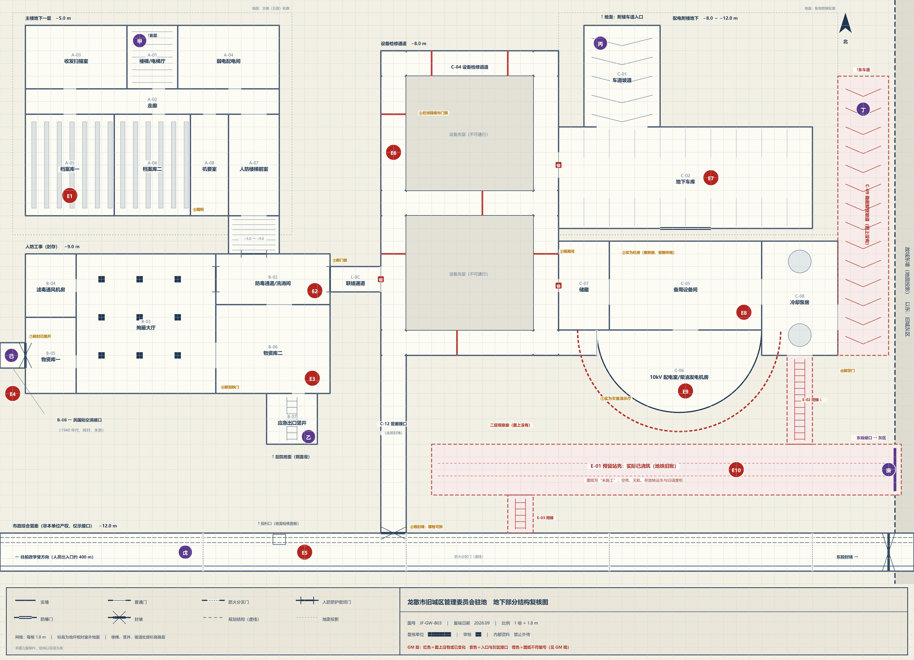
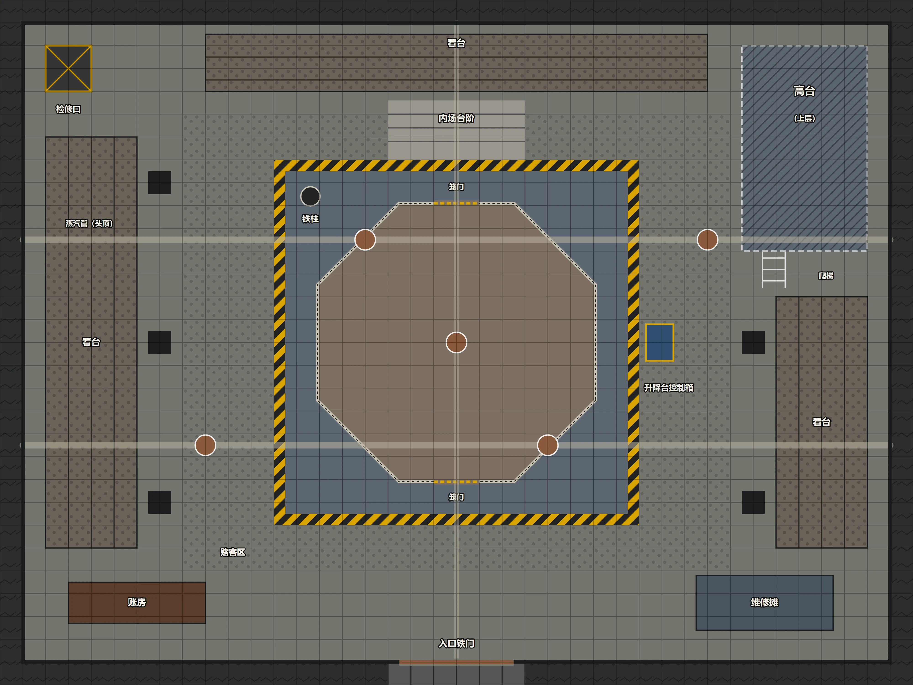
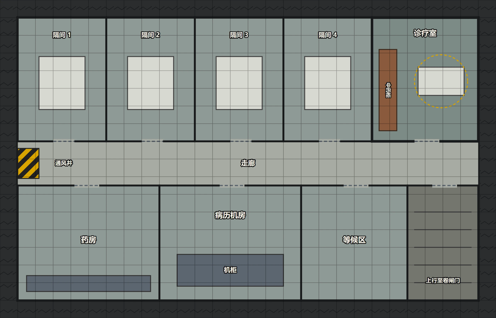
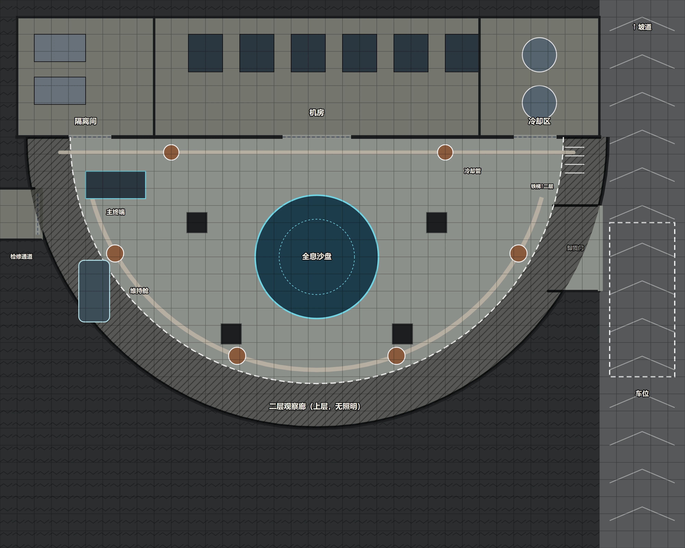
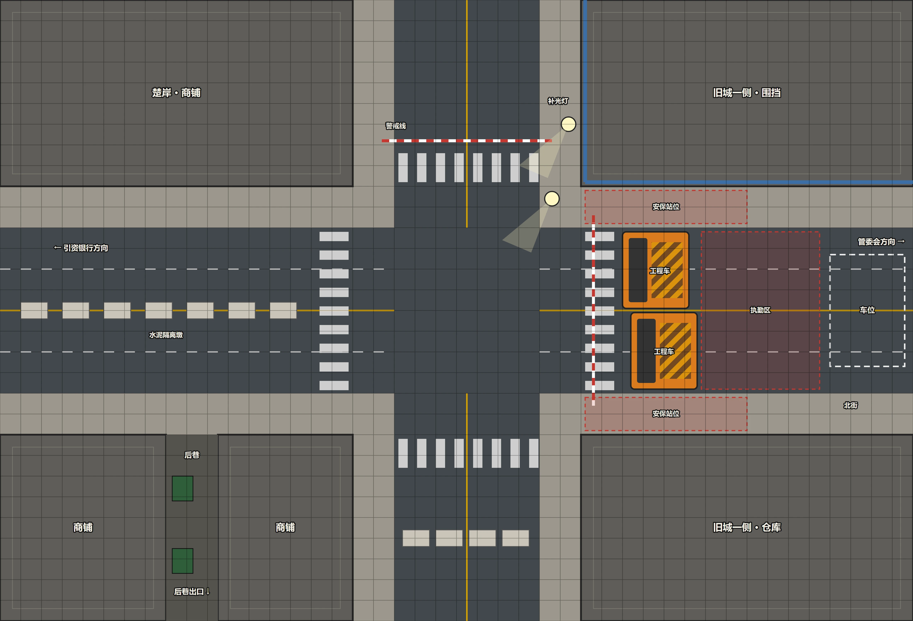

方泰安行动钟 6 个行动回合 · 点格子设为当前回合 · 玩家每打断一格，后面对应的事就不发生或变形
第 5 回合开场 两路分头：云里互娱（11，入口丁的消息和中药柜夹层里的道具 2）；管委会外围踩点（07，东车道卷闸门＝入口丁，被认出就打变体牌四）。铝热剂车这一回合运进去。阿尔坎上午查到的长盒子、诊所设备还没告诉队友。
结局保底：玩家没能在交割前打进去，方泰安也逃不掉。交割后他对上面已经没用，郁垒照样在坡道上灭口，只是现场证据、陈培安和赃款都随交割一起没了，第一章按最低档收束。玩家打得越早、剥掉的皮越多，留下的东西越多。
线索网：怎么找到灾备厅 通往灾备厅的路有好几条，丢一条不卡关 ·
方泰安出场牌 不排在固定场景里；玩家走到哪就从合适的牌里出一张 · 靠他手里的筹码真实存在，不是强制判定玩家失败
场景卡速查 一个地点或局面一张；写在场者各要什么、能拿到什么、可能的后果，不写结局
终战工具 08 灾备演示厅 · C-06
陈培安维持舱 · 3 轮倒计时
- 接备用电源：修理 TN 4（没有工具 −2）。成功则倒计时停止。
- 拆便携接口：修理或电子学 TN 4（仓促 −2）。成功把接口连同残留一起拆下，倒计时停止；舱体留在原地，陈培安可以被带走。
- 骇客导出：骇客对抗安防 d8。成功稳定并导出本地记录；优良额外保住一组记录。
- 援助/拖延：援助 +1/+2；治疗 TN 4 可额外拖延 1 轮，仅一次。大失败倒计时额外 −1。
数据：坚韧 10(4)，安防 d8，骇入难度 5。主电源被扯断的当轮开始，每轮结束减 1；到 0 时陈培安的受损意识彻底消散，何凌陷入自责。踩响警报而未到第 6 回合时，玩家冲进演示厅即开始倒计时。（S16-NPC数据 8.3；数值待 GM 拍板）
“剥皮兑现”：开打前按之前做成的事结算现场
勾选玩家在前面几个回合做成的事。
郁垒的节奏
- 前两轮：站二层观察廊，只替方泰安挡下一次会导致他提前暴毙的致命攻击，并远程开枪掩护销毁涉及上游买家的通讯记录。跳帧前电子表一声轻响“嘀”，落地后有两秒蓝紫残影。
- 第 3 轮起（或方泰安义手被打断、退路被截断时）：收枪退入二层阴影旁观，不再替方泰安拦任何一下。
- 被集火打伤会果断跳帧拉开距离，只留最后一颗子弹给方泰安。
方泰安的战术
- 开打或听见警报，第一件事扯断维持舱主电缆。
- 视线内 12 格念动：掀翻沙盘基座、扯断高压母线；抓技术员（或被扣的何凌）挡在身前，往 C-09 卸货坡道防弹车退。
- 被近身逼急：液压义手重砸，同时开价“坡道车里还有两千万不记名债券和干净护照！”
- 念动需要视线与专注：打爆 C-08 冷却管道的蒸汽白雾、烟雾弹、强光爆震或贴身重击都能中断。
固定结局：“上面”与灭口落地
当方泰安的液压义手被打断、护卫倒下、防弹车被堵死或轮胎打爆，彻底失去反抗能力时，无论场上处于哪一轮，立刻进入固定结局。一旦他说出“上面”两个字，郁垒必定触发跳帧开枪灭口（即使郁垒此前已被逼退到冷却区或坡道口，也会借蒸汽与残影切入完成这一枪）。
展开可直接念的灭口段落
NPC 速查 14 人 · 点台词复制 · 战斗数据取自 S16-NPC数据
玩家道具 十件 · 正文可复制到 Foundry 日志或聊天 · 可标记已交出
地图 每格 100px · 点击缩略图打开原图（PNG）





